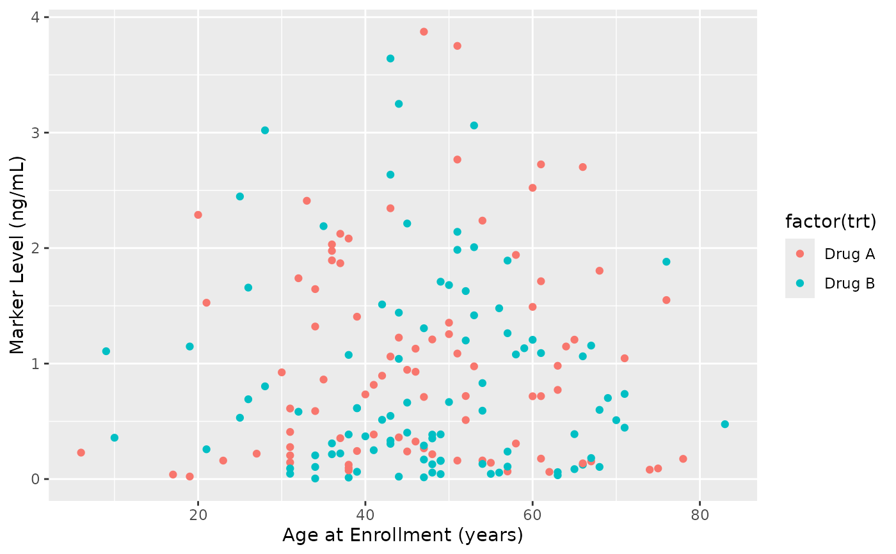

Apply variable labels from dictionary to data as attributes
Source:R/labels.R
apply_labels_from_dictionary.RdSets variable label attributes on data columns using a dictionary.
This enables cross-package integration with tools that read label attributes,
including ggplot2 4.0+ (automatic axis labels), gt (label support), and Hmisc.
Labels are stored as the 'label' attribute on each column, following the
informal convention used across the R ecosystem.
This function is designed for workflows where you need labels to persist with your data for use in plots, descriptive tables, or other visualizations beyond gtsummary tables.
Arguments
- data
A data frame or tibble to add label attributes to
- dictionary
A data frame or tibble with
VariableandDescriptioncolumns matching the format used byadd_auto_labels()- overwrite
Logical. If
TRUE(default), overwrites existing label attributes. IfFALSE, preserves existing labels and only adds new ones.
Value
The input data with label attributes attached to matching columns. Original data is returned unmodified except for added/updated attributes.
Details
This function provides a bridge from sumExtras' dictionary-based labeling system to the broader R ecosystem. Key use cases:
ggplot2 4.0+: Automatic axis and legend labels from attributes
Cross-package workflows: One dictionary for tables (gtsummary) and plots (ggplot2)
Documentation: Labels visible in RStudio data viewer
Interoperability: Compatible with gt, Hmisc, and other label-aware packages
Only variables present in both the data and dictionary will receive label attributes. Dictionary entries for non-existent variables are silently ignored.
Implementation: The R Ecosystem Label Convention
This function uses native R's attr() function to store labels in the "label"
attribute, following the same approach as haven, Hmisc, and ggplot2 4.0+.
This standardized convention enables seamless integration across the R ecosystem.
Because labels are stored as simple base R attributes (not in a special package-specific
format), they work transparently with any package that respects the "label" attribute:
Dictionary-to-Attribute Bridge: Converts your dictionary's
Descriptioncolumn into standard R label attributesZero Dependencies: Uses only base R, no special packages required
Transparent & Simple: Users can inspect labels with
attr(data$var, "label")Ecosystem Compatible: Works with ggplot2, gt, gtsummary, Hmisc, and beyond
The benefits of this approach are that labels remain portable with your data, work across multiple R packages without version constraints, and integrate naturally with the broader R ecosystem's labeling conventions.
See also
add_auto_labels()for applying labels to gtsummary tableslabelled::var_label()for an alternative way to set label attributesggplot2::labs()for manual plot labeling
Other labeling functions:
add_auto_labels()
Examples
# \donttest{
# Create a dictionary
my_dict <- tibble::tribble(
~Variable, ~Description,
"age", "Age at Enrollment (years)",
"marker", "Marker Level (ng/mL)",
"trt", "Treatment Group",
"grade", "Tumor Grade"
)
# Apply labels to data
trial_labeled <- gtsummary::trial |>
apply_labels_from_dictionary(my_dict)
# Now labels work automatically in gtsummary
trial_labeled |>
gtsummary::tbl_summary(by = trt, include = c(age, marker, grade))
Characteristic
Drug A
N = 981
Drug B
N = 1021
1 Median (Q1, Q3); n (%)
# And in ggplot2 4.0+ (automatic axis labels!)
if (requireNamespace("ggplot2", quietly = TRUE) &&
utils::packageVersion("ggplot2") >= "4.0.0") {
library(ggplot2)
trial_labeled |>
ggplot(aes(x = age, y = marker, color = factor(trt))) +
geom_point() # Axes and legend automatically labeled!
}
#> Warning: Removed 21 rows containing missing values or values outside the scale range
#> (`geom_point()`).

# Check that labels were applied
attr(trial_labeled$age, "label") # "Age at Enrollment (years)"
#> [1] "Age at Enrollment (years)"
# Preserve existing labels
trial_partial <- gtsummary::trial
attr(trial_partial$age, "label") <- "Existing Age Label"
trial_partial |>
apply_labels_from_dictionary(my_dict, overwrite = FALSE)
#> # A tibble: 200 × 8
#> trt age marker stage grade response death ttdeath
#> <chr> <dbl> <dbl> <fct> <fct> <int> <int> <dbl>
#> 1 Drug A 23 0.16 T1 II 0 0 24
#> 2 Drug B 9 1.11 T2 I 1 0 24
#> 3 Drug A 31 0.277 T1 II 0 0 24
#> 4 Drug A NA 2.07 T3 III 1 1 17.6
#> 5 Drug A 51 2.77 T4 III 1 1 16.4
#> 6 Drug B 39 0.613 T4 I 0 1 15.6
#> 7 Drug A 37 0.354 T1 II 0 0 24
#> 8 Drug A 32 1.74 T1 I 0 1 18.4
#> 9 Drug A 31 0.144 T1 II 0 0 24
#> 10 Drug B 34 0.205 T3 I 0 1 10.5
#> # ℹ 190 more rows
attr(trial_partial$age, "label") # Still "Existing Age Label"
#> [1] "Existing Age Label"
attr(trial_partial$marker, "label") # "Marker Level (ng/mL)" (was added)
#> [1] "Marker Level (ng/mL)"
# }